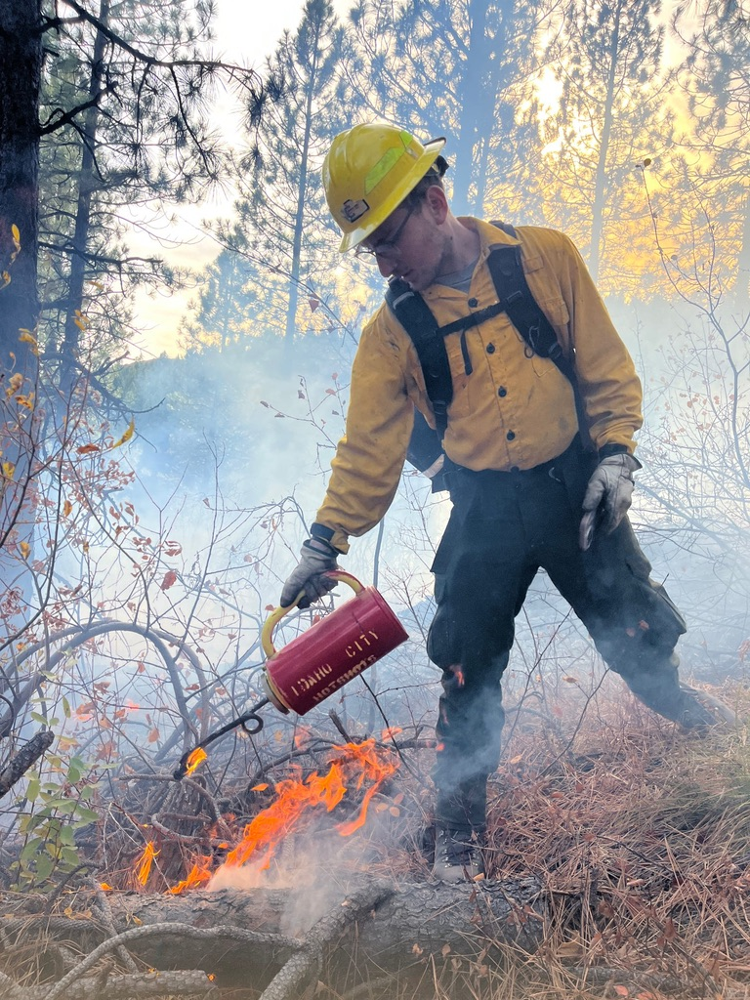

PhD Student · Computer Graphics
Jesse Schwartz
Studying computer graphics, animation, and non-photorealistic rendering at CraGL — researching sketch optimizations, real time optimizations, and interactive techniques.
About

I'm a first-year PhD student in Computer Science at George Mason University, working in the Computational Reality, Creativity and Graphics Lab (CraGL). My research lives at the intersection of animation, non-photorealistic rendering, and the technology that makes moving images expressive.
Before Mason I earned bachelor degrees in Computer Science and Communication: Film & Media Arts from American University, worked as an Machine Learning Engineer at Comcast, and spent a year with AmeriCorps NCCC Forest Corps fighting wildfires, battling climate change, and reinforcing ecosystems across the Western US.
Research
I'm drawn to rendering techniques that feel drawn — brushstrokes, ink, watercolor, stepped motion. The kind of frames that look like a human made them, even when a computer did.
News
- Loading news…